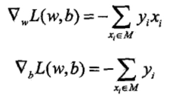
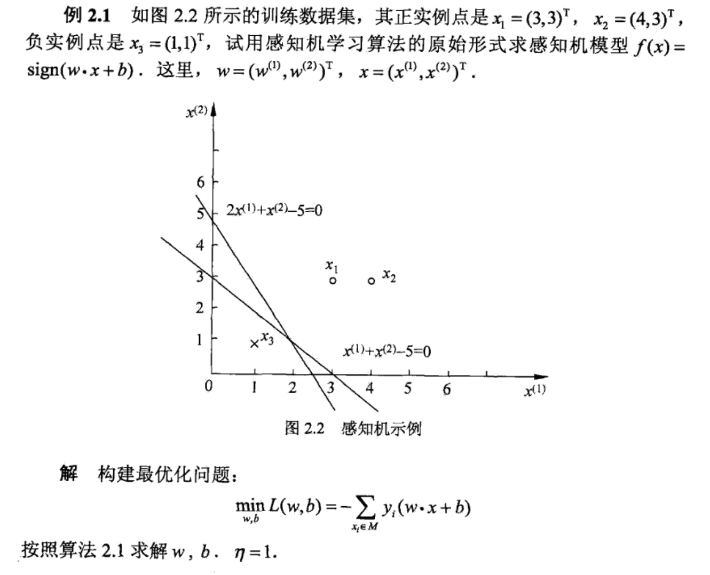

感知机是二类分类的线性分类模型，其输入为实例的特征向量，输出为实例的类别（一般为+1和-1），感知机对应于输入空间（特征空间）中将实例划分为正负两类的分离超平面，属于判别模型。感知机学习旨在求出将训练数据进行线性划分的分离超平面。感知机也是神经网络与支持向量机的基础。
感知机模型
感知机的定义为：

感知机有如下的几何解释：
线性方程：w*x + b = 0
对应于特征空间R中的一个超平面S，其中w是超平面的法向量，b是超平面的截距，这个超平面将特征空间划分为两个部分，位于两部分的点就被划分为正，负两类，如下图所示：

所以求感知机的模型，也就是去求得模型参数w，b。感知机预测，通过学习得到的感知机模型，对于新输入实例给出其对应的输出类别。
感知机的学习策略
数据集的线性可分性

感知机学习策略
如果训练数据集是线性可分的，那么我们需要确定一个学习策略，也就是定义（经验）损失函数并将损失函数极小化。
损失函数的一个自然选择是误分类点的总数。但是，这样的损失函数不是参数w,b的连续可导函数，不易优化。损失函数的另一个选择是误分类点到超平面S的总距离，这是感知机所采用的。为此，首先写出输入控件R中任一点x到平面S的距离：
这里，||w||是w的2范数。
其次，对于五分类的数据（x，y）来说，
-y(w*x+b)>0成立。因为当w*x+b>0时，y=-1，而当w*x+b<0时y=+1，因此，误分类点x到超平面S的距离是：

这样，假设超平面S的误分类点集合为M，那么所有的误分类点到超平面S的总距离为：

所以，感知机的损失函数定义为：
显然，损失函数是非负的，如果没有误分类点，那么损失函数为0，而误分类点越少，误分类点离超平面越近，损失函数值越小。一个特定的样本点的损失函数：在误分类时是参数w，b的线性函数，在正确分类时是0，因此给定训练数据集T，损失函数是w，b的连续可导函数。
总的来说我们的感知机学习策略就是在假设空间中选取使损失函数式最小的模型参数w，b。
感知机学习算法
我们的策略已经明确，就是求解损失函数式的最优化，我们这里最优化的方法是随机梯度下降法。
感知机学习算法的原始形式
感知机学习算法是对以下最优化问题的算法，给定一个训练集：
感知机学习算法是误分类驱动的，具体采用随机梯度下降法（stochastic gradient descent)。首先，任意选取一个超平面然后用梯度下降法不断地极小化目标函数（2.5）。极小化过程中不是一次使M中所有误分类点的梯度下降， 而是一次随机选取一个误分类点使其梯度下降。
假设误分类点集合M是固定的，那么损失函数的梯度由
给出。
随机选取一个误分类点(x,y)，对w,b进行更新：
式中η(0<η≤1)是步长，在统计学习中又称为学习率，这样，通过迭代可以期待损失函数不断减小，直到为0，综上所述，得到如下算法：
这种学习算法直观上有如下解释：当一个实例点被误分类，即位于分离超平面的错误一侧时，则调整w,b的值，使分离超平面向该误分类点的一侧移动，以减少该误分类点与超平面间的距离，直至超平面越过该误分类点使其被正确分类。
上述算法是感知机学习的基本算法，对应于后面的对偶形式，称为原始形式。感知机学习算法简单且易于实现。
该算法使用方法如下：



这是在计算中误分类点先后取x1,x3,x3,x3,x1,x3,x3得到的分离超平面和感 知机模型，如果在计算中误分类点依次取x1,x3,x3,x3,x2,x3,x3,x3,x1,x3,x3那么得到的分离超平面是2x1+x2-5=0
可见，感知机学习算法由于采用不同的初值或选取不同的误分类点，解可以不同。